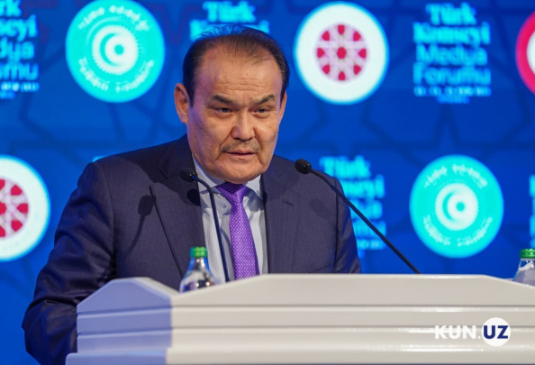
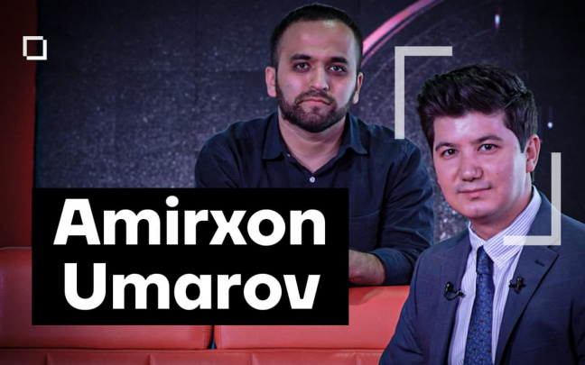
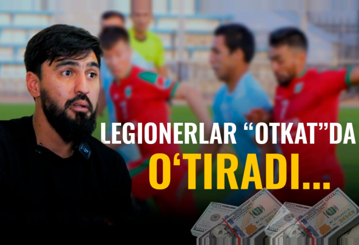

- Hududlar
- Toshkent
- Qoraqalpog'iston
- Andijon
- Farg'ona
- Namangan
- Samarqand
- Buxoro
- Xorazm
- Surxondaryo
- Qashqadaryo
- Jizzax
- Sirdaryo
- Toshkent vil.
- Navoiy
So'nggi yangiliklar
Qashqadaryo viloyati IIB YHXB rahbariyati xodimlarga 20 tadan protokol tuzish majburiyatini yuklagani aytilmoqda
Uzbekistan Airways ta’tildan qaytadigan talabalar uchun yangi reyslarni yo‘lga qo‘yadi
Shavkat Mirziyoyev Qozog‘iston xalqi va prezidentiga ta’ziya yo‘lladi
Qishki ta’til uzaytirilgani o‘qituvchilar maoshiga ta’sir qilmaydi - XTV
Xususiy maktablarga ta’tilni 24 yanvarga qadar uzaytirish tavsiya etildi
O‘zbekiston go‘sht importini oshirdi
2021 yilda shaharlararo avtobusda yo‘l haqi narxi 9,4 foizga oshdi
AKFA Universiteti 2022-2023 o‘quv yili uchun abituriyentlardan hujjatlar qabul qilishni 2022 yilning yanvar oyidan boshlaydi
Potensial qotillar chiqarayotgan avtomaktablar: «prava»
topshirish xususiy qo‘llarga o‘tishi o‘zini oqlaydimi?
Monitoring: Toshkentda havo sifati borgan sari yomonlashmoqda
Barnoyevning ukasi, prokuror va energetik. Uchta viloyatdagi 8 tumanda yangi hokimlar ish boshladi
Prezident bosh prokurorga: «Katta-katta hokimlarni jinoiy javobgarlikka torsangiz, hurmat qilishni boshlayman»
-
Muharrir tanlovi
- Barchasi
Dolzarb Xabarlar
Ukraina, Olimpiada, NATO va toliblar. Putin navbatdagi yillik matbuot anjumanida nimalar haqida gapirdi?
23 dekabr kuni Rossiya prezidenti Vladimir Putin jurnalistlar bilan navbatdagi yillik matbuot anjumanini o‘tkazdi. Rossiya rahbari matbuot anjumani davomida jurnalistlarni qiziqtirgan turli mavzulardagi savollarga javob berdi.
Chust tumani hokimi uloq paytida otdan yiqilgani aytilmoqda
Urush yoki demokratiya. Liviya Qazzofiydan 10 yil keyin ilk prezidentini saylay oladimi?
Putin «G‘arbga qo‘yilgan ultimatum»ni izohladi. U bu ultimatum emasligini aytdi
Qarindoshlar orasida tuzilgan oilalarning 24,9 foizida nogiron farzandlar bor - Mahalla vazirligi
-
Intervyu
-
Intervyu

-
Ekologik inqiroz: O‘zbekistonning suv muammosiga yechim bormi? | Vazir bilan suhbat
-

Tarix, bugun va kelgusi rejalar - Turkiy davlatlar tashkiloti bosh kotibi bilan suhbat
-

“Yosh yigitcha siyosatni gapirganida kulishgandi” - SUBYEKTIV'da Amirxon Umarov bilan suhbat
-

«Yutqazib berishimiz uchun rad qilib bo‘lmas darajadagi katta pul taklif qilishgandi». Sadriddin Abdullayev bilan eksklyuziv intervyu
Kun.uz shurishtiruvi
Chustda hokimlik mashinalari daxlsiz deb e’lon qilinganmi?
“Dizayn” jamoasi tadbirkorning 30 ming dollarini qaytarmayapti. Guruh barcha sudlarda yutqazgan
“Yana jinchiroqda qish o‘tkazamizmi?” - Andijonning ikki qishlog‘idagi bir muammo
Qachongacha ota-onalar farzandini mashina tagidan chiqarib oladi? - Xonqizning svetoforsiz chorrahasi
Maqolalar
G‘aroyib tez yordam, osma ko‘prik, qishga g‘amlangan suv. “Manzil” – Oqdahana
“Manzil” loyihasi bu safar Qashqadaryo viloyati Qamashi tumanining Oqdahana qishlog‘ida yashovchi, jaydari va samimiy insonlar haqida hikoya qiladi.
Potensial qotillar chiqarayotgan avtomaktablar: «prava» topshirish xususiy qo‘llarga o‘tishi o‘zini oqlaydimi?
Buxoroda haydovchilik guvohnomasi olib beraman deya pul olib firibgarlik qilgan shaxs qo‘lga tushdi.
Otalar. Uch hayotiy hikoya
Farzandlari uchun yashayotgan otalar haqida.
Yo‘llardagi xavf-xatar va tartibsizlik: qoidabuzarlarga o‘ta keskin choralar qo‘llash vaqti kelmadimi?
Ushbu maqola yo‘llardagi avariyalarning oldini olish, ko‘chalarda tartibli harakatlanish uchun haydovchilarni kuzatish va jarimaga tortish tizimi, umuman, haydovchilik guvohnomasi olish uchun o‘qitish qanday bo‘lishi kerakligi haqida.
Xonlar uchun saqlangan qovunlar. “Manzil” – Andarxon
Farg‘onaning Andarxon qishlog‘idagi ko‘plab uylarda qovunxonalar bor. Qishloq ahli qovunlarni hatto may oyigacha saqlab keladi, bunda Qo‘qon shamolining ham o‘rni bor. Tomosha qiling, “Manzil” loyihasi bu gal Andarxon qovunlarini sizga ilindi.
Odamlar o‘limiga sabab bo‘layotgan yuqori tezlik va keng yo‘llar: muammo yechimi nimada?
Poytaxt Toshkent shahrining keng ko‘chalari naqadar chiroyli ko‘rinmasin, ular juda xavfli. Haydovchi uchun ham, piyoda uchun ham.
-
Bank transformatsiyasida
moliyaviy menejment va
g‘aznachilikning roli –
Ravshan Kadirov -
Bank transformatsiyasida
moliyaviy menejment va
g‘aznachilikning roli –
Ravshan Kadirov -
Bank transformatsiyasida
moliyaviy menejment va
g‘aznachilikning roli –
Ravshan Kadirov -
Bank transformatsiyasida
moliyaviy menejment va
g‘aznachilikning roli –
Ravshan Kadirov -
Bank transformatsiyasida
moliyaviy menejment va
g‘aznachilikning roli –
Ravshan Kadirov